本課學習焦點
辨識本課已核對詞彙，練習中文朗讀並以完整句表達。
🎯 學習目標
1辨識本課已核對詞彙，練習中文朗讀並以完整句表達。
2朗讀已核對詞彙，辨識生字、認讀字與語詞
3使用兩個詞語造完整句
4聆聽同學並提出一個問題
🗺️ 學習脈絡
選擇詞彙 👀→朗讀與辨音 🔊→查看詞義 🔎→完成句子 ✍️→分享與回應 🤝
📽️ NotebookLM 全冊教學簡報
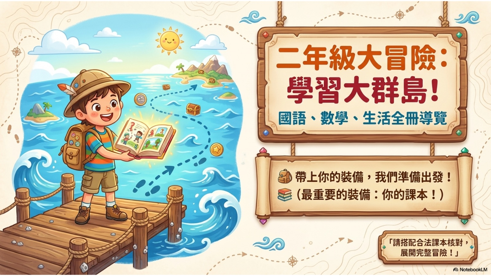
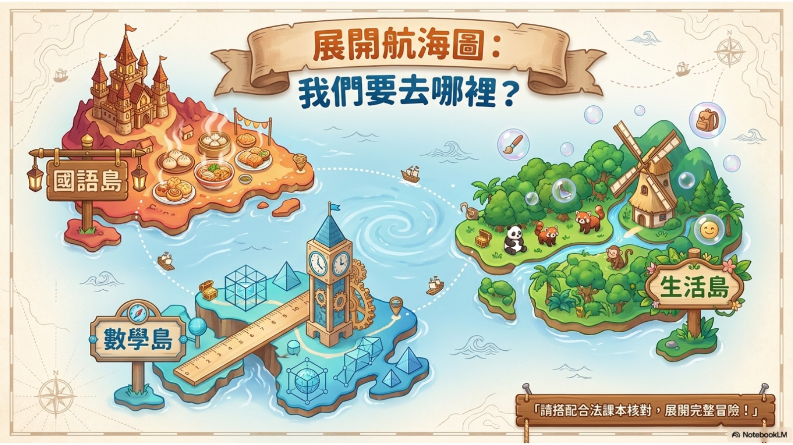
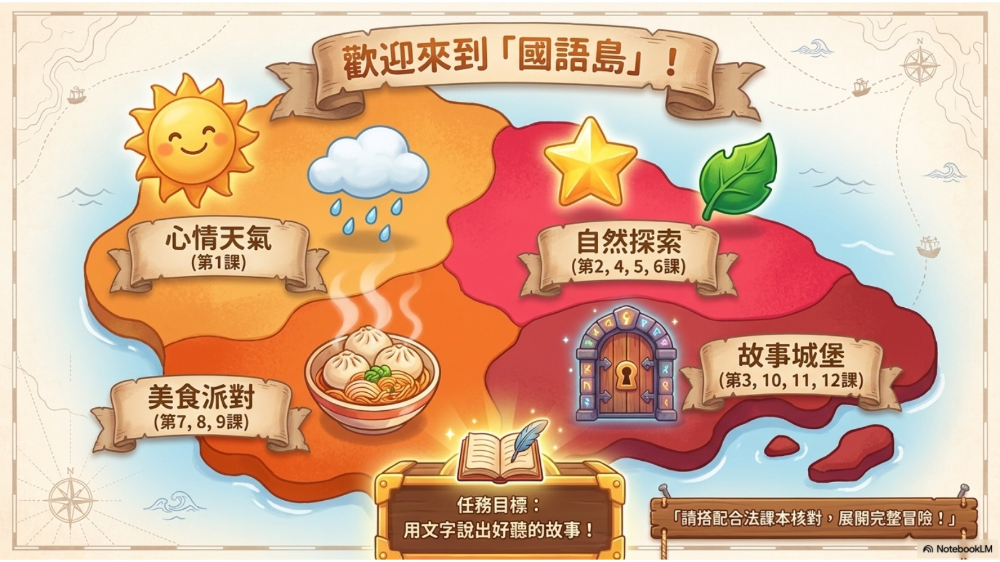
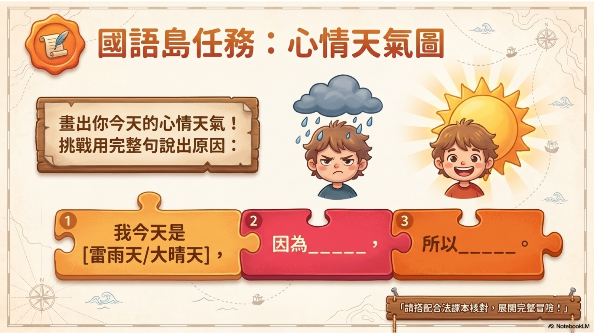
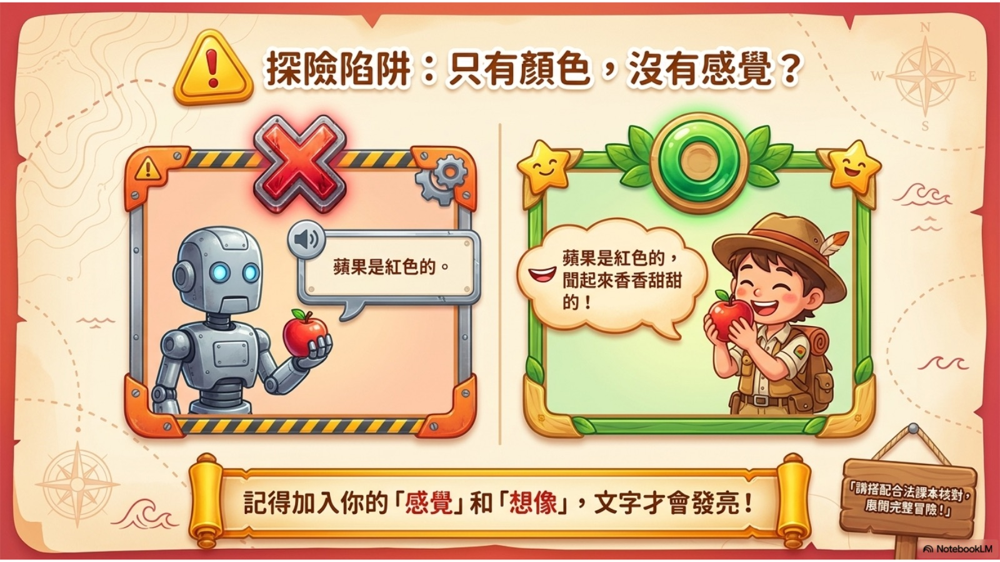
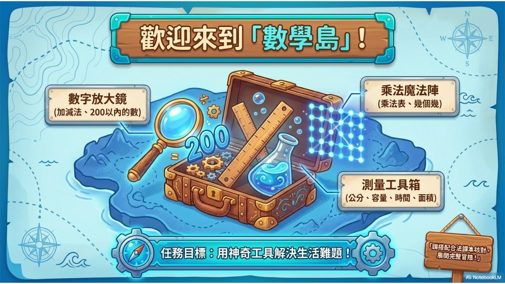
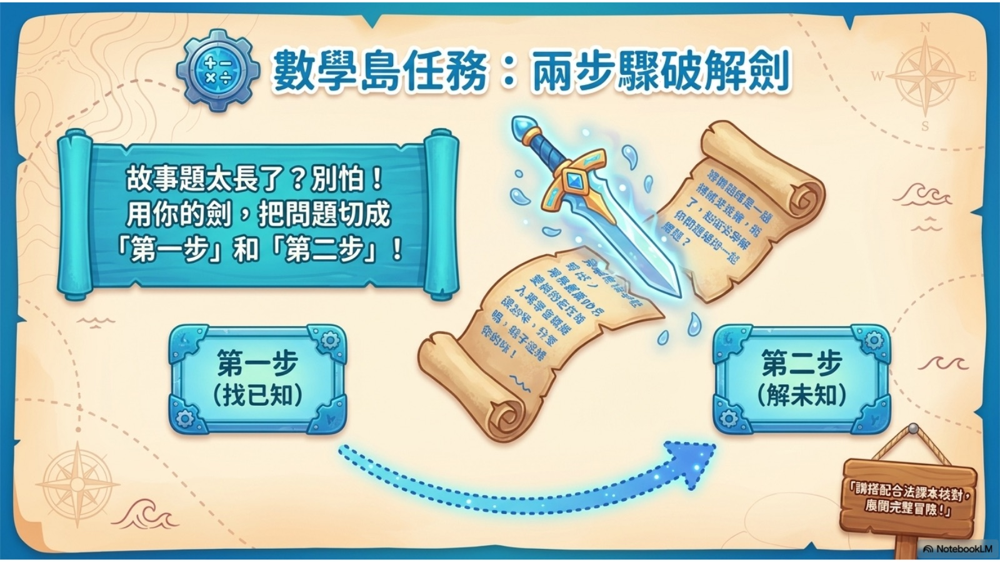
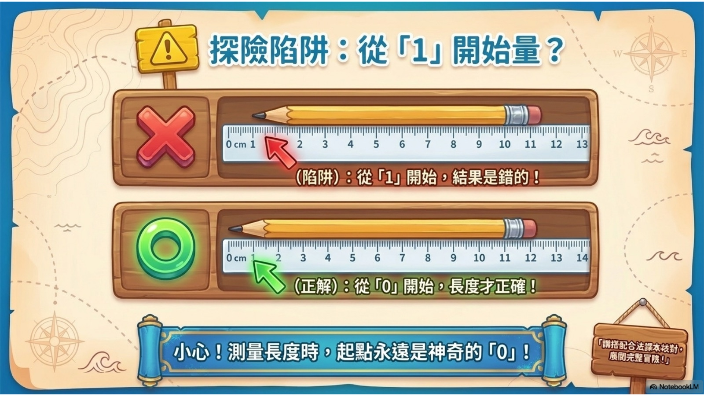
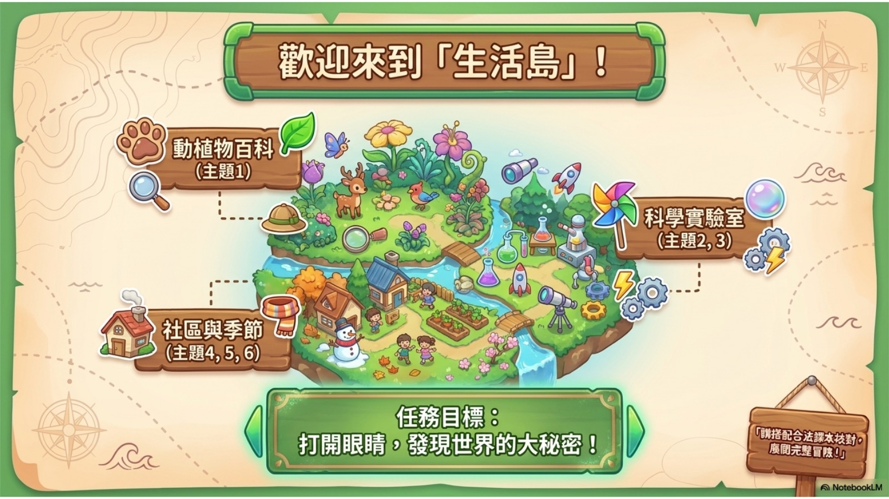
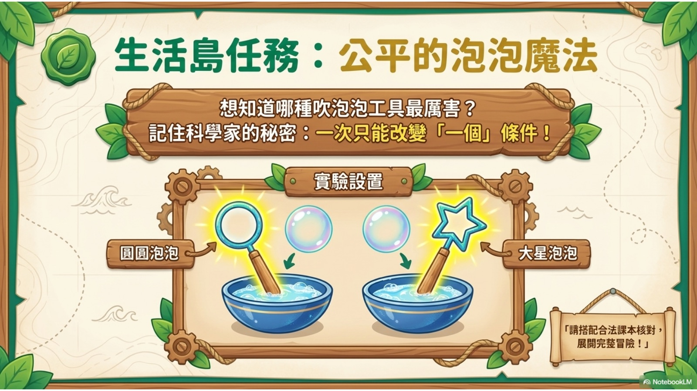
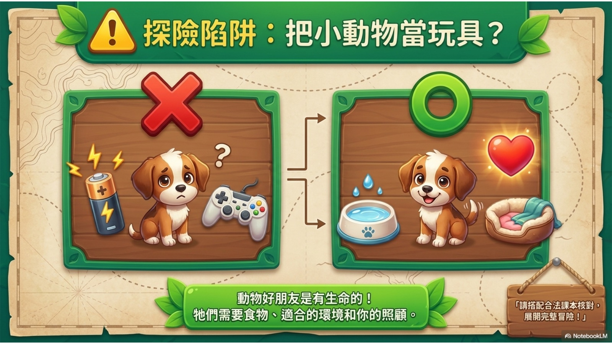
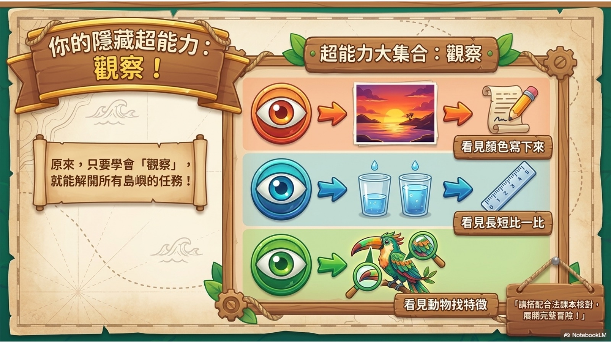
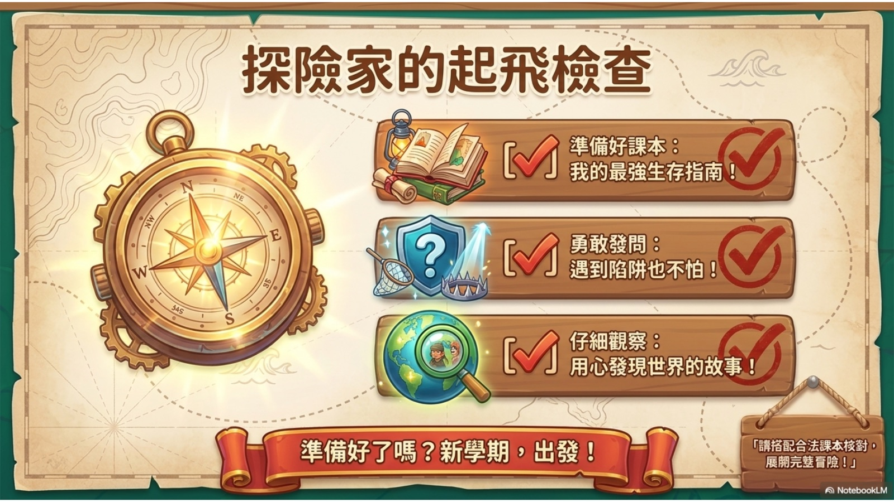
📚 已核對詞彙與朗讀入口
已完成公開學習層：課名、教育雲逐課詞彙與翰林朗讀入口均已核對。以下按原始類別列出詞彙；點按可使用本機瀏覽器的中文發音練習。
生字（18）
認讀字（2）
語詞（9）
前往翰林聽 e 聽：本課課文朗讀／領讀 →
翰林聽 e 聽僅供購買相關書籍者作學習用途；本站只提供外連，不下載、嵌入、重製或重新上傳音檔。
課文事件、人物、段落與理解題尚未有合法 text-structure brief；本站不以詞彙或課名推測課文內容，也不會在這個狀態產製本課 NotebookLM／YouTube 影片。
🧩 課堂實作
🎯 課堂任務
從已核對詞彙選兩個，先朗讀，再各用自己的話造一句完整句。
任務流程
觀察：先說出你看見、聽見或已知道的線索。
思考：和同學比較不同方法或想法。
表達：完成任務並用一句完整的話分享發現。
👩🏫 教師提示
Bloom 三層提問
- 記憶：這一課／單元有哪些重要詞語或概念？
- 理解：你能選兩個已核對詞語，說出自己的完整句嗎？
- 應用：你能在生活中找到相似例子，或完成今天的課堂任務嗎？
常見迷思
只認字就等於完成；還要朗讀、查看詞義，並用完整句表達。
✅ 自我檢核
💬 離堂小卡
請完成一句話：
今天我學會＿＿＿＿；我還想知道＿＿＿＿。
📝 形成性評量
❓ 這個公開詞彙練習最重要的學習焦點是什麼？
❓ 完成任務後，哪一個做法最能幫助學習？
🎬 本課媒體狀態
本課專屬 NotebookLM 簡報／影片尚未產製。必須先完成來源包、內容核對與 artifact QA，才會嵌入本課影片。
目前可用的是 全冊學習導覽，它不是本課專屬影片。
本頁依公開課程目錄與詞彙表設計，不重製課文或題本；請搭配合法教材使用。